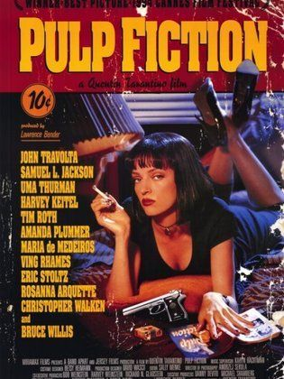

The Shawshank Redemption
Over the course of several years, two convicts form a friendship, seeking consolation and, eventually, redemption through basic compassion.
The Godfather
The aging patriarch of an organized crime dynasty transfers control of his clandestine empire to his reluctant son.
The Dark Knight
When the menace known as the Joker wreaks havoc and chaos on the people of Gotham, Batman must accept one of the greatest psychological and physical tests of his ability to fight injustice.
The Godfather Part II
The early life and career of Vito Corleone in 1920s New York City is portrayed, while his son, Michael, expands and tightens his grip on the family crime syndicate.
The Lord of the Rings: The Return of the King
Gandalf and Aragorn lead the World of Men against Sauron's army to draw his gaze from Frodo and Sam as they approach Mount Doom with the One Ring.
Pulp Fiction
The lives of two mob hitmen, a boxer, a gangster and his wife, and a pair of diner bandits intertwine in four tales of violence and redemption.
The Lord of the Rings: The Fellowship of the Ring
A meek Hobbit from the Shire and eight companions set out on a journey to destroy the powerful One Ring and save Middle-earth from the Dark Lord Sauron.
Fight Club
.jpg)
An insomniac office worker and a devil-may-care soap maker form an underground fight club that evolves into much more.
The Lord of the Rings: The Two Towers
While Frodo and Sam edge closer to Mordor with the help of the shifty Gollum, the divided fellowship makes a stand against Sauron's new ally, Saruman, and his hordes of Isengard.
Inception
A thief who steals corporate secrets through the use of dream-sharing technology is given the inverse task of planting an idea into the mind of a C.E.O., but his tragic past may doom the project and his team to disaster.
The Matrix
When a beautiful stranger leads computer hacker Neo to a forbidding underworld, he discovers the shocking truth--the life he knows is the elaborate deception of an evil cyber-intelligence.
Se7en

Two detectives, a rookie and a veteran, hunt a serial killer who uses the seven deadly sins as his motives.
Interstellar
.jpg)
When Earth becomes uninhabitable in the future, a farmer and ex-NASA pilot, Joseph Cooper, is tasked to pilot a spacecraft, along with a team of researchers, to find a new planet for humans.